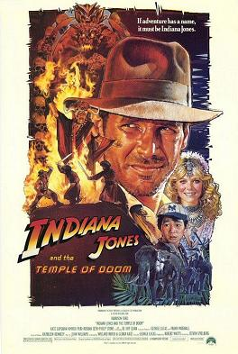

Indiana Jones and the Last Haiku
Indiana Jones,
Goes on some final crusade.
and wears a fun hat.
[̲̅$̲̅(̲̅ ͡° ͜ʖ ͡°̲̅)̲̅$̲̅]

Indiana Jones and the Lost Haiku
Indiana Jones,
Finds a big boat or something
and writes poetry
( ͡° ͜ʖ ͡°)

Indiana Jones and the Temple of Haikus that Have a Consistent Theme of Doom
Indiana Jones,
Enters the temple of doom
and he straight up dies.
( ͡° ʖ̯ ͡°)